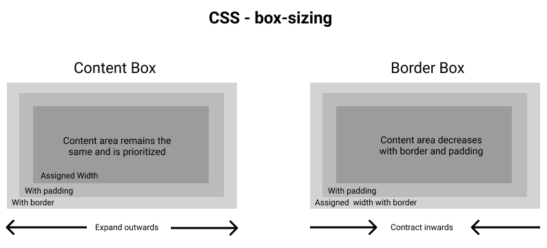

Shipping Cupcakes
Box Sizing
 In order to ship cupcakes (the contents) across the country, we need many layers of padding to protect the cupcakes. The orange (contents) represent the cupcakes,
the padding represents the packing peanuts, the border represents the shipping box, and the margin represents the insulation outside of the box that prevents the cupcakes from melting!
We stack these boxes in our trucks to deliver them to their destinations:
In order to ship cupcakes (the contents) across the country, we need many layers of padding to protect the cupcakes. The orange (contents) represent the cupcakes,
the padding represents the packing peanuts, the border represents the shipping box, and the margin represents the insulation outside of the box that prevents the cupcakes from melting!
We stack these boxes in our trucks to deliver them to their destinations:

There are two methods to determine the size of the shipments in terms of height and width. In the image below: In the content box on
the left, the height and width reflect the measurements of the contents of the box, and additional layers of protection add to the overall dimensions of the shipment. In the border box on the right,
the height and width reflect both the contents of the box and the additional layers of packaging.
Which one would you prefer for someone calculating all the numbers?
I would prefer to know the overall dimensions, so it is easier to fill up a truck. I can do this by using box-sizing:order-box!
Learn more here!
Want to learn how I placed the images on the left and right sides?
I floated the first image to the left and the second image to the right using float:left; and float:right; Then, I used clear: right; so that the following text is pushed below the right floated image (to create a new section.) This is often used for formatting content, including wrapping text around images.
Learn more here!